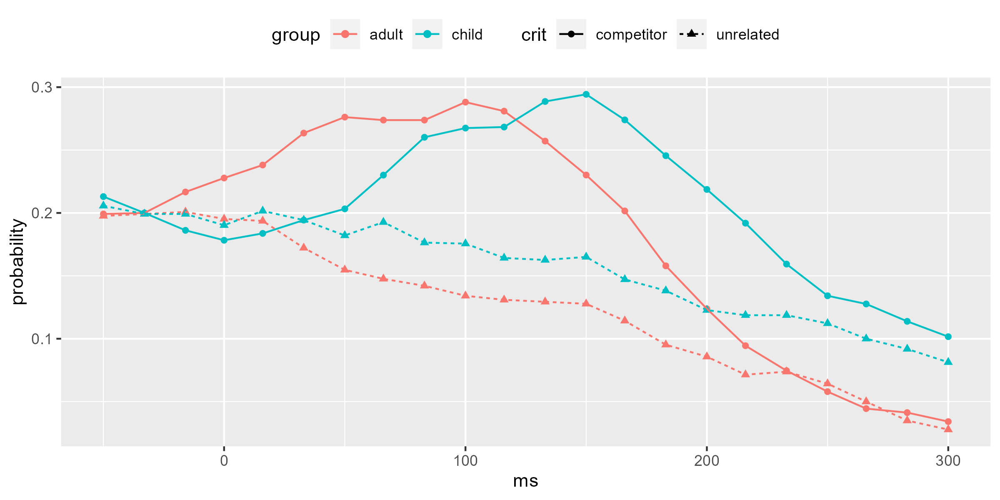

library("tidyverse")
library("exchangr") # remotes::install_github("dalejbarr/exchangr")
library("clusterperm") # remotes::install_github("dalejbarr/clustperm")
pog_subj <- read_rds("data-derived/pog_subj.rds") %>%
filter(role == "critical",
between(ms, -200, 300)) %>%
select(-role, -Y, -N) %>%
mutate(group = factor(group),
crit = factor(crit),
sub_id = factor(sub_id))5 Cluster-permutation analysis
Cluster-permutation analysis was first developed for statistical problems in fMRI (Bullmore et al. 1999) and EEG/MEG research (Maris and Oostenveld 2007). It developed as a means of controlling the false positive rates for numerous tests across electrode, voxel, and time, without incurring the catastrophic hit to power that would occur using conventional (Bonferroni-type) correction methods. Usually you would use this approach when you more are interested in when an effect arises than in the overall shape of effects across an analysis window. However, I would be remiss not to mention a recent article which takes a critical view on its ability to establish the locus of effects in time (Sassenhagen and Draschkow 2019). But it is still useful for establishing a time range around which ‘something is happening’ even if it doesn’t allow us to express uncertainty around the boundaries of that time range (which would be even more useful).
5.1 Our task
What we are going to do is run a cluster-permutation analysis on the data below, to see when the group-by-competition interaction is likely to be reliable.

For the analysis, we’ll need two development packages (only available on github): {exchangr} and {clusterperm}. The former does exchangeable permutations, and the latter more specifically for this kind of analysis.
We’re going to use the data pog_subj that we created in the last chapter and saved in the data-derived/ subdirectory. We’re going to be performing ANOVAs on the data using aov(), so we’ll need to define our independent variables as factors.
Let’s take a moment to understand the aov() function from base R. Imagine that instead of having multiple frames, we wanted to run an ANOVA on a single time point, say at 150 ms. We have a mixed design (group = between-subjects; crit = within-subjects), so the way we would do it is as shown below.
pog_150 <- pog_subj %>%
filter(ms == 150L) %>%
select(-ms)
mod_aov <- aov(p ~ group * crit + Error(sub_id / crit),
pog_150)
summary(mod_aov)
Error: sub_id
Df Sum Sq Mean Sq F value Pr(>F)
group 1 0.1067 0.10669 7.584 0.00727 **
Residuals 81 1.1395 0.01407
---
Signif. codes: 0 '***' 0.001 '**' 0.01 '*' 0.05 '.' 0.1 ' ' 1
Error: sub_id:crit
Df Sum Sq Mean Sq F value Pr(>F)
crit 1 0.5552 0.5552 27.098 1.43e-06 ***
group:crit 1 0.0075 0.0075 0.366 0.547
Residuals 81 1.6595 0.0205
---
Signif. codes: 0 '***' 0.001 '**' 0.01 '*' 0.05 '.' 0.1 ' ' 15.1.1 Activity: aov_by_bin()
The aov_by_bin() function from {clusterperm} will run that same ANOVA at every bin in the dataset. Try it, plugging in the same formula from above. Save the result as orig_result.
Solution
orig_result <- aov_by_bin(pog_subj, ms,
p ~ group * crit + Error(sub_id / crit))
orig_result# A tibble: 93 × 4
ms effect stat p
<int> <chr> <dbl> <dbl>
1 -200 group 0.0329 0.857
2 -200 crit -3.44 0.0672
3 -200 group:crit -2.66 0.107
4 -183 group 0.0456 0.831
5 -183 crit -2.18 0.143
6 -183 group:crit -0.654 0.421
7 -166 group -0.189 0.665
8 -166 crit -1.11 0.295
9 -166 group:crit -0.219 0.641
10 -150 group -0.535 0.467
# … with 83 more rowsThe function aov_by_bin() returns the variable stat, which is a signed F statistic, and is positive or negative depending on the direction of the effect. It also returns p, which is the p-value for the effect at the corresponding bin.
A ‘cluster’ is defined as a set of temporally-adjacent bins where all of the test statistics have the same signs, and the p-values are all less than alpha (where alpha is the false positive level, usually .05). We look for these temporally adjacent bins for each main effect or interaction.
In this case we have two main effects (group and crit) and one interaction (group:crit), and we can detect clusters for each one of these.
5.1.2 Activity: Detect clusters
The {clusterperm} package provides a function to do this, detect_clusters_by_effect(), which is fed the output of aov_by_bin(). Try applying this function to orig_result, and save the result as clusters.
Solution
clusters <- orig_result %>%
detect_clusters_by_effect(effect, ms, stat, p)
clusters# A tibble: 3 × 5
effect b0 b1 sign cms
<chr> <int> <int> <dbl> <dbl>
1 group 150 300 -1 169.
2 crit 33 216 1 284.
3 group:crit 33 66 1 21.5b0 and b1 tell you the start and end frames for each cluster; sign gives you the direction of the effect, and cms gives you the “cluster mass statistic”, which is the summed test statistics for the entire cluster.
5.2 Deriving null-hypothesis distributions through resampling
A permutation test has proceeds according to the following steps:
- perform an analysis on the original data and store the resulting test statistic;
- generate a null-hypothesis distribution for the test statistic by randomly permuting labels, re-running the analysis, and storing the test statistic many times;
- compare the original test statistic to the distribution of statistics you generated in step 2 to determine how unlikely your original test statistic is under the null hypothesis.
Warning
The logic of permutation tests is appealing, but you can really get into trouble very easily trying to apply it to multilevel data. There is a critical assumption that you need to ensure is honored, which is that all exchanges you make when generating the null-hypothesis distribution are legitimate exchanges under H0. To state this differently, each randomly re-labeled dataset should be one that could have existed had the experiment gone differently, but didn’t.
The functions in {exchangr} are there to help you meet this assumption, but they should not be used without understanding exactly what they do.
Let’s see how easy it is to go wrong when exchanging labels on multilevel data. We decide that we want to randomly re-label adults and children in order to test the effect of group and/or the group-by-crit interaction. Run the count() function on the original data in pog_subj to see what is what.
pog_subj %>%
count(sub_id, group)# A tibble: 83 × 3
sub_id group n
<fct> <fct> <int>
1 1 adult 62
2 2 adult 62
3 3 adult 62
4 4 adult 62
5 5 adult 62
6 6 adult 62
7 7 adult 62
8 8 adult 62
9 9 adult 62
10 10 adult 62
# … with 73 more rowsEach subject was either an adult or a child, and has 62 observations. Now let’s imagine we applied shuffle() without thinking, as an attempt to reattach the labels across subjects
set.seed(62) # so you get the same random result as me
pog_shuffled_bad <- pog_subj %>%
shuffle(group)
pog_shuffled_bad# A tibble: 5,146 × 5
sub_id group crit ms p
<fct> <fct> <fct> <int> <dbl>
1 1 adult competitor -200 0.2
2 1 child competitor -183 0.333
3 1 adult competitor -166 0.467
4 1 adult competitor -150 0.5
5 1 child competitor -133 0.467
6 1 child competitor -116 0.367
7 1 adult competitor -100 0.3
8 1 child competitor -83 0.367
9 1 adult competitor -66 0.4
10 1 child competitor -50 0.4
# … with 5,136 more rowspog_shuffled_bad %>%
count(sub_id, group)# A tibble: 166 × 3
sub_id group n
<fct> <fct> <int>
1 1 adult 33
2 1 child 29
3 2 adult 37
4 2 child 25
5 3 adult 28
6 3 child 34
7 4 adult 21
8 4 child 41
9 5 adult 38
10 5 child 24
# … with 156 more rowsSo now we can see the problem: in our re-labeled group, subject 1 is both adult and child! We have violated the exchangeability of the labels under the null hypothesis, creating an impossible dataset, and turning a between-subject factor into a within-subject factor. Any null-hypothesis distribution created from this manner of shuffling will be garbage.
What we need to do is to “nest” the 62 observations into a list-column before we do the shuffling, using the nest() function from {tidyr}. Once we’ve done this, then we can run the shuffle function, and then unnest the data back into it’s original form.
5.2.1 Activity: Build a nest()
Let’s try using the nest() function to create the data below from pog_subj. For guidance, look at the examples in the documentation (type ?nest in the console). Save the result as pog_nest. Then try to unnest() the data.
# A tibble: 83 × 3
sub_id group data
<fct> <fct> <list>
1 1 adult <tibble [62 × 3]>
2 2 adult <tibble [62 × 3]>
3 3 adult <tibble [62 × 3]>
4 4 adult <tibble [62 × 3]>
5 5 adult <tibble [62 × 3]>
6 6 adult <tibble [62 × 3]>
7 7 adult <tibble [62 × 3]>
8 8 adult <tibble [62 × 3]>
9 9 adult <tibble [62 × 3]>
10 10 adult <tibble [62 × 3]>
# … with 73 more rows
Solution
pog_nest <- pog_subj %>%
nest(data = c(-sub_id, -group))## back to its original format
pog_nest %>%
unnest(cols = c(data))# A tibble: 5,146 × 5
sub_id group crit ms p
<fct> <fct> <fct> <int> <dbl>
1 1 adult competitor -200 0.2
2 1 adult competitor -183 0.333
3 1 adult competitor -166 0.467
4 1 adult competitor -150 0.5
5 1 adult competitor -133 0.467
6 1 adult competitor -116 0.367
7 1 adult competitor -100 0.3
8 1 adult competitor -83 0.367
9 1 adult competitor -66 0.4
10 1 adult competitor -50 0.4
# … with 5,136 more rowsOK, now that we’ve figured out how to nest data, we can apply shuffle() to the nested data and then unnest. We’ll write a function to do this called shuffle_ml(). This will work with all the {clusterperm} functions as long as we name the first argument .data.
shuffle_ml <- function(.data) {
.data %>%
nest(data = c(-sub_id, -group)) %>%
shuffle(group) %>%
unnest(data)
}Let’s try it out and verify that it works as intended.
pog_subj %>%
shuffle_ml() %>%
count(sub_id, group)# A tibble: 83 × 3
sub_id group n
<fct> <fct> <int>
1 1 adult 62
2 2 child 62
3 3 adult 62
4 4 adult 62
5 5 child 62
6 6 adult 62
7 7 adult 62
8 8 adult 62
9 9 adult 62
10 10 adult 62
# … with 73 more rowsLooks good! Now we are ready to use shuffle_ml() to build our NHD (null-hypothesis distribution). Note that because we are only shuffling group, we can only use the NHD for tests of group and group-by-crit. If we also want to run a test of the main effect of crit, we would have to shuffle crit (and because it’s a mixed design, you’d have to “synchronize” the shuffling over the levels of group, for which shuffle_each_sync() has been provided).
We’ll use cluster_nhds() to get our null hypothesis distribution from 1000 monte carlo runs, and then the pvalues() function to derive p-values for our original clusters.
## make sure we're not using an old version
stopifnot(packageVersion("clusterperm") > "0.1.0")
## warning: can take many minutes!!
set.seed(62) # for reproducibility
nhds <- cluster_nhds(1000, pog_subj, ms,
p ~ group * crit + Error(sub_id / crit),
shuffle_ml)
cp_result <- pvalues(clusters %>% filter(effect != "crit"),
nhds %>% filter(effect != "crit"))
saveRDS(cp_result,
file = "data-derived/cluster-permutation-result.rds")Now let’s print out the results.
cp_result# A tibble: 2 × 6
effect b0 b1 sign cms p
<chr> <int> <int> <dbl> <dbl> <dbl>
1 group 150 300 -1 169. 0.000999
2 group:crit 33 66 1 21.5 0.127 We have a clear main effect of group extending from 150-300 ms, which is where on the figure we can see the adults have a higher probability of looking at either picture than the children (p < .001). There was a group-by-competition interaction detected on the original data from 33-66 ms, but it was not statistically significant (p = 0.127).